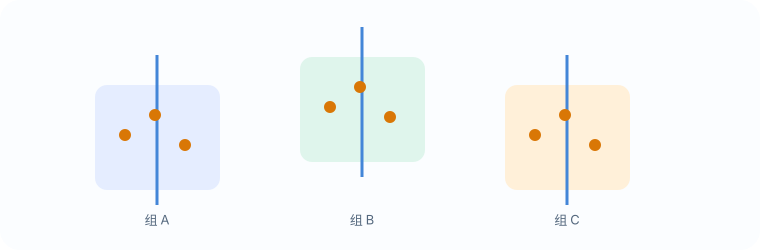

第21章 方差分析（ANOVA）
大家好，我是你们的讲师。前面两章我们都在处理"因变量是什么"的问题——连续值用线性回归，二分类用逻辑回归。现在换一个角度：假设我们想比较三个或更多组的均值是否有显著差异，该怎么办？比如三种减肥方法的效果、四种教学方式的成绩、五个工厂的次品率。你可能会想：简单，两两做 t 检验不就完了？答案令人遗憾：不行。这一章的 ANOVA（Analysis of Variance，方差分析）就是专门解决这个问题的。
本章学习目标
- 单因素ANOVA
- 双因素ANOVA
- 交互效应

交互实验：组间变异与组内变异
固定组内均方为 1，改变组间均方，观察 F 比值如何变化。
交互控件加载后，可调整参数并观察统计量的变化。
21.1 ANOVA 的直觉：比较多个组的均值
ANOVA 这个名字可能会误导你——它叫"方差分析"，但目的是比较均值。为什么比较均值却要从方差入手？原因在于：如果各组均值差异很大，那么组间方差就会远大于组内方差。换句话说，ANOVA 的核心思路是分解总方差：
- 组间方差（Between-group variance）： 各组均值与总均值之间的差异，体现了"处理效应"。
- 组内方差（Within-group variance）： 每组内部个体之间的差异，体现了"随机误差"。
如果组间方差显著大于组内方差，我们就说至少有一组的均值与其他组不同。
21.2 单因素 ANOVA：F 统计量与组间/组内方差
单因素 ANOVA（One-way ANOVA）只有一个分类自变量（因素）。F 统计量的计算公式为：
F = (组间均方 MSB) / (组内均方 MSW)
= (SSB / df_between) / (SSW / df_within)F 值越大，组间差异越显著。对应的 p 值告诉我们这个 F 值在零假设（所有组均值相等）下出现的概率。
使用 ANOVA 有三个关键前提：
- 正态性：每组数据近似服从正态分布。
- 方差齐性（Homogeneity of variance）：各组的方差大致相等。可以用 Levene 检验来验证。
- 独立性：观测值之间相互独立。
21.3 双因素 ANOVA 与交互效应
双因素 ANOVA（Two-way ANOVA）有两个分类自变量，可以分析：
- 主效应（Main Effect）：每个自变量的独立效果。
- 交互效应（Interaction Effect）：两个自变量是否"联手"产生了单独行动没有的效果。
例如，研究"教学方法"和"学生性别"对考试成绩的影响。可能的结果：
| 教学方法 | 男生平均分 | 女生平均分 | 行平均 |
|---|---|---|---|
| 传统讲授 | 72 | 75 | 73.5 |
| 互动式教学 | 85 | 78 | 81.5 |
| 线上自学 | 68 | 80 | 74.0 |
| 列平均 | 75.0 | 77.7 | — |
这里教学方法有主效应（行平均有差异），性别的主效应不显著，但交互效应可能存在——因为互动式教学对男生效果更好，而线上自学对女生效果更好。这就是交互效应：一个因素的效应依赖于另一个因素的取值。
21.4 事后检验（Post-hoc）：Tukey HSD
如果 ANOVA 结果显示至少有一组不同，但我们不知道是哪几组不同。这就需要进行事后检验（Post-hoc Test）。最常用的是 Tukey's HSD（Honestly Significant Difference）检验，它对所有可能的组对进行两两比较，同时校正多重比较带来的假阳性膨胀。
21.5 ANOVA 与线性回归的关系
ANOVA 和线性回归实际上是同一个广义线性模型框架下的特例。事实上，ANOVA 可以看作是以分类变量为自变量的线性回归：
- 把 k 个组用 k-1 个虚拟变量（dummy variables）表示。
- 回归的 F 检验和 ANOVA 的 F 检验完全等价。
- 回归的 R² 等于 ANOVA 中的 η²（eta-squared），反映"组间方差占总方差的比例"。
在 statsmodels 中，你可以用 ols + anova_lm 来同时获得回归结果和 ANOVA 表：
import numpy as np
import pandas as pd
import scipy.stats as stats
import statsmodels.api as sm
from statsmodels.formula.api import ols
from statsmodels.stats.anova import anova_lm
from statsmodels.stats.multicomp import pairwise_tukeyhsd
# 模拟数据：三种教学方法对成绩的影响
np.random.seed(42)
n_per_group = 30
data = pd.DataFrame({
'成绩': np.concatenate([
np.random.normal(72, 8, n_per_group), # 传统
np.random.normal(80, 8, n_per_group), # 互动
np.random.normal(75, 8, n_per_group), # 线上
]),
'方法': ['传统'] * n_per_group + ['互动'] * n_per_group + ['线上'] * n_per_group
})
# 方法一：scipy 单因素 ANOVA
f_stat, p_val = stats.f_oneway(
data[data['方法']=='传统']['成绩'],
data[data['方法']=='互动']['成绩'],
data[data['方法']=='线上']['成绩']
)
print(f"F = {f_stat:.3f}, p = {p_val:.5f}")
# 方法二：statsmodels 回归视角下的 ANOVA
model = ols('成绩 ~ C(方法)', data=data).fit()
anova_table = anova_lm(model)
print(anova_table)
# 事后检验：Tukey HSD
tukey = pairwise_tukeyhsd(data['成绩'], data['方法'], alpha=0.05)
print(tukey)这一章我们学习了方差分析——从直觉理解到 F 统计量、单因素和双因素 ANOVA、事后检验 Tukey HSD、以及 ANOVA 和线性回归的内在联系。下一章我们将进行一次世界观的转换，从频率学派走向贝叶斯统计——一种把概率解释为"信念程度"的思维方式。
本章小结
整体检验后需要定位差异，并报告效应大小和不确定性。